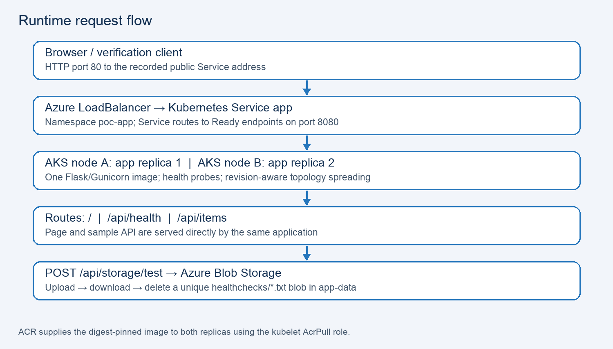
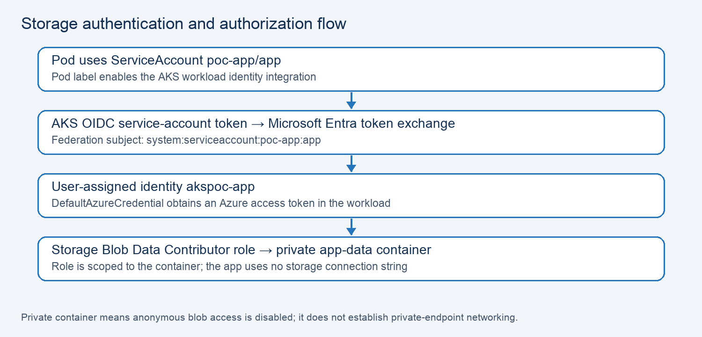
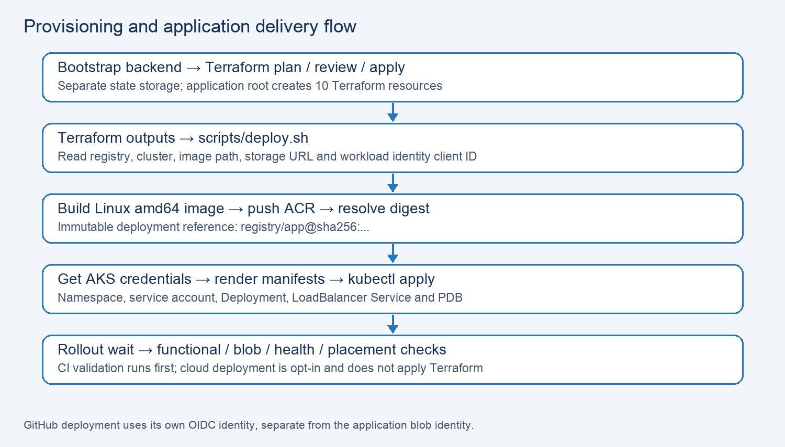
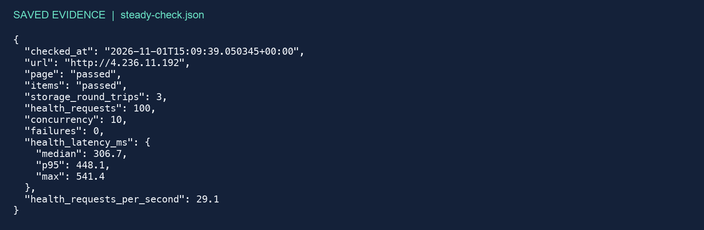
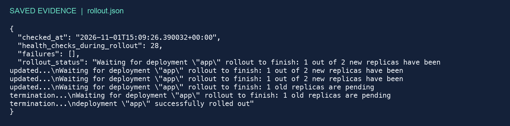
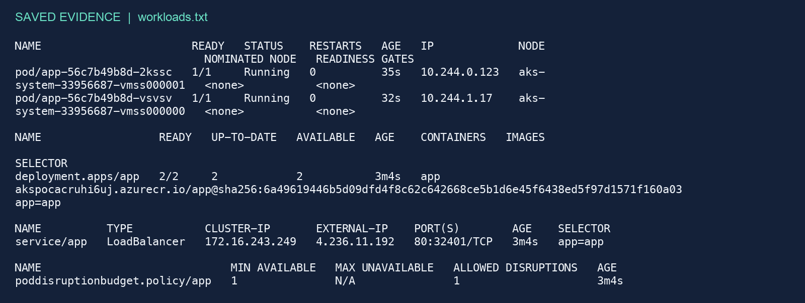
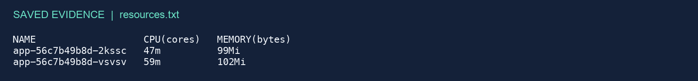
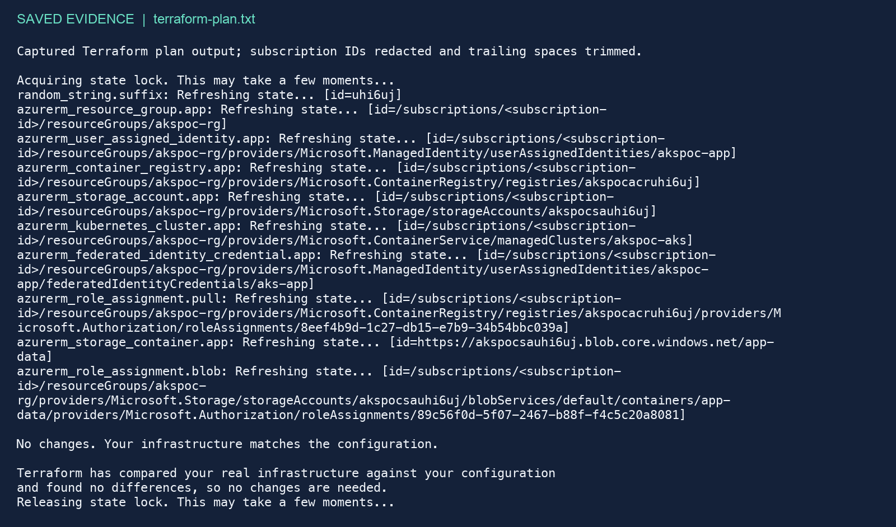

Project architecture, implementation and verification
Technical project documentation • 1 November 2026
Repository: github.com/krishnagmx/azure-aks-poc
A Terraform-managed Azure Kubernetes demonstration with one Python application image, two replicas, Azure Container Registry and identity-based Azure Blob Storage access.
This document describes the committed implementation and the evidence recorded on 1 November 2026. It does not assert that the cloud deployment is currently running.
Contents: 1. Runtime architecture; 2. Scope and components; 3. Repository layout; 4. Deploy from scratch; 5. How the pieces connect; 6. Workload identity; 7. Provisioning and delivery; 8. Application and Kubernetes; 9. Known PoC shortcuts and hardening; 10. Cost and cleanup; 11. Troubleshooting; 12. Public verification evidence; 13. Rolling updates and placement; 14. Infrastructure and resource evidence; 15. Boundaries and source index.
Evidence images are faithful text renderings of saved JSON and command-output files. They are not original terminal captures, Azure Portal screenshots or new live checks. Architecture diagrams explain the source configuration.

Figure 1. Request and image distribution flow.
Only the explicit storage-test route calls Blob Storage. Health checks remain independent of storage, so a storage outage does not itself trigger liveness-driven app restarts. The items API returns fixed sample data and has no database dependency.
The project simplifies an earlier stack to the services the application actually uses. The Node proxy, PostgreSQL, Key Vault and Application Gateway/WAF are outside the current implementation. Earlier evidence in the top-level evidence folder must not be mixed with the dated current-stack evidence.
| Component | Implementation / purpose |
| Application | Flask + Gunicorn; Python 3.11 slim image; page and API in one container |
| AKS | Free tier; Azure CNI overlay; 2–3 autoscaled Standard_D2s_v4 nodes by default |
| ACR | Basic tier; admin credentials disabled; kubelet AcrPull role |
| Storage | Standard LRS; TLS 1.2 minimum; private app-data container; 7-day blob deletion retention |
| Identity | User-assigned app identity, AKS OIDC federation and container-scoped blob role |
| Networking | Public LoadBalancer Service, HTTP 80 → application 8080 |
| State | Separate bootstrap storage backend with versioning and soft deletion |
Default location: westus3. Default naming prefix: akspoc, with a generated suffix for globally unique names. Terraform manages ten resources including the random suffix and role assignments; the backend and Kubernetes objects are managed separately.
.github/workflows/deploy.yml Validation and optional app delivery infrastructure/ AKS, ACR, Blob Storage and identity src/backend/ Flask app, static page and Dockerfile k8s/ Namespace and workload manifests scripts/ Bootstrap, deploy, render and verify tests/ Application and manifest tests evidence/live-2026-11-01/ Current-stack recorded results docs/ Setup, CI, case study and this document
Start with infrastructure/main.tf for cloud resources, k8s/app.yaml for runtime controls, and src/backend/app.py for request behavior. The deployment script connects Terraform outputs to the Kubernetes renderer.
Prerequisites: Python 3.11+, Bash, Git, Terraform >=1.7 and <2, Azure CLI, Docker with Linux amd64 support, kubectl and jq. Azure provisioning needs resource creation and role-assignment permissions. These are documented reproduction steps; this document build does not execute them.
python3 -m venv .venv source .venv/bin/activate python -m pip install -r requirements-dev.txt python -m unittest discover -s tests -v python -m flask --app src/backend/app run
After Azure login, select the intended subscription and check regional and VM-family quota. Bootstrap dedicated state, copy the example Terraform variables and review the plan before applying.
bash scripts/bootstrap-backend.sh cp infrastructure/terraform.tfvars.example infrastructure/terraform.tfvars terraform -chdir=infrastructure init terraform -chdir=infrastructure plan -out=deployment.tfplan terraform -chdir=infrastructure apply deployment.tfplan IMAGE_TAG=<unique-tag> bash scripts/deploy.sh
Use your own Service address for verification. The rollout script intentionally restarts the deployment.
python scripts/verify.py http://<your-service-ip> python scripts/verify_rollout.py http://<your-service-ip> kubectl get pods -n poc-app -o wide kubectl top pods -n poc-app terraform -chdir=infrastructure plan -detailed-exitcode
Troubleshoot image pulls with ACR digest and AcrPull permissions; blob 502 errors with logs, federation and RBAC; Pending pods with scheduling events and capacity. For a bad app revision use kubectl rollout undo deployment/app -n poc-app. Review cleanup commands in docs/SETUP.md: deleting the namespace and applying a reviewed Terraform destruction plan removes the app stack. Retain the separate backend until destruction and any required evidence export finish.
| Connection | Mechanism |
| Public requests | Client → public LoadBalancer → Service app → Ready Flask pod on port 8080 |
| Image delivery | Docker → ACR → kubelet image pull using AcrPull → digest-pinned Deployment |
| App configuration | Terraform deployment output → deploy.sh environment → render.py → manifests |
| Blob authentication | Service-account token → AKS OIDC federation → app managed identity → DefaultAzureCredential |
| Blob authorization | Storage Blob Data Contributor scoped to the app-data container |
| Readiness and routing | Health probes determine Ready endpoints; storage is tested separately |
| CI login | GitHub OIDC → deployment identity; distinct from the app identity |
| State access | Bootstrap backend retains Terraform state; deployment reads outputs from that state |
Unlike the supplied reference architecture, this implementation has one application container and a direct public Service. It does not implement Front Door, Application Gateway, ingress-nginx, PostgreSQL or Key Vault.

Figure 2. Application token and authorization flow.
The service-account annotation is rendered with the Terraform identity client ID; the pod label azure.workload.identity/use is true. The federated credential trusts the AKS issuer and the AzureADTokenExchange audience.
Application authentication avoids an app storage secret. Terraform backend/provider administration still uses storage keys. The CI deployment identity is separate and must be configured manually with the appropriate registry, AKS and backend permissions.

Figure 3. Local delivery pipeline and verification gates.
GitHub Actions checks unit tests, Terraform formatting/validation, shell syntax and Docker build on pull requests and main pushes. Deployment requires AZURE_DEPLOY_ENABLED=true, a non-PR main ref, a successful check job and configured OIDC variables. A committed workflow is not evidence of a successful hosted CI run.
| Route | Behavior |
| GET / | Static HTML page |
| GET /api/health | JSON service=backend, status=ok |
| GET /api/items | Two fixed sample items |
| POST /api/storage/test | Unique blob upload/read/delete; 503 if unconfigured; 502 on storage failure |
Gunicorn runs two workers with two threads each on port 8080, a 60-second timeout and a 25-second graceful timeout. The container runs as UID/GID 10001 with a read-only root filesystem, dropped Linux capabilities, no privilege escalation and RuntimeDefault seccomp. A 64 MiB emptyDir supplies writable /tmp.
| Deployment setting | Configured value |
| Replicas / update strategy | 2; maxUnavailable=0; maxSurge=1 pod |
| CPU request / limit | 100m / 1 CPU per pod |
| Memory request / limit | 128 MiB / 256 MiB per pod |
| Termination | 35-second grace; 5-second preStop sleep |
| Startup probe | Every 2s; failure threshold 30; timeout 3s |
| Readiness / liveness | Every 5s / 10s; timeout 3s |
| PDB | minAvailable=1 for voluntary disruptions |
| Topology spread | Hostname maxSkew=1; DoNotSchedule; matchLabelKeys=[pod-template-hash] |
The application pod surge and AKS node upgrade surge are separate settings. Neither guarantees extra node capacity when the subscription quota is exhausted.
| Current shortcut | Production follow-up |
| Public HTTP endpoint | Add managed TLS termination and HTTPS |
| Unauthenticated blob-write test | Protect the API with authentication, authorization and abuse controls |
| Single region; no explicit zone redundancy | Choose zonal node/storage options and test failure scenarios |
| AKS Free / ACR Basic / LRS | Select service tiers for the required availability and recovery objectives |
| Four-vCPU quota consumed by two nodes | Request node autoscaling and upgrade headroom before relying on it |
| Short checks and usage snapshots | Add sustained tests, centralized metrics/logs and alerting |
| Backend administration uses storage keys | Restrict state access and evaluate identity-based backend administration |
| Default cluster credential flow | Configure deliberate Entra/Kubernetes RBAC and API access restrictions |
A disruption budget protects voluntary evictions. It does not establish node-failure recovery, zone resilience or an uptime SLA.
The two AKS virtual machines, associated disks, LoadBalancer/public networking, ACR, Blob Storage and retained Terraform backend are the cost drivers. AKS Free refers to the control-plane tier; node infrastructure still incurs charges. No current price estimate is claimed in this document.
Use the Azure cost view and calculator for your region, VM size, traffic and retention. Stop retaining unused deployments when the demonstration is complete. The state backend is separate and remains after destroying the application stack.
Cleanup sequence from docs/SETUP.md; execute only against the intended subscription and cluster, after exporting required data:
kubectl delete namespace poc-app --wait=true terraform -chdir=infrastructure plan -destroy -out=destroy.tfplan # Review the destruction plan before applying it. terraform -chdir=infrastructure apply destroy.tfplan
Deleting the namespace first allows Kubernetes to release the managed LoadBalancer resources. Confirm removal in Azure. Remove the backend resource group only after destruction succeeds and only if it is dedicated to this project.
| Symptom | Check / action |
| Backend ResourceGroupNotFound | Run bootstrap-backend.sh; verify subscription and backend names |
| QuotaExceeded or node creation failure | Check regional and DSv4-family quotas, SKU availability and region capacity |
| ImagePullBackOff | Check image digest in ACR, kubelet AcrPull role and permission propagation |
| Storage API returns 503 | AZURE_STORAGE_ACCOUNT_URL is unset; render and supply the storage endpoint |
| Storage API returns 502 | Inspect app logs, client-ID annotation, pod label, federation subject and container role |
| Pending pod | Describe the pod; inspect capacity, events and topology-spread constraints |
| LoadBalancer address pending | Inspect Service events and allow Azure provisioning to complete |
| Metrics unavailable | Allow metrics collection for new pods; check metrics-server availability |
| ModuleNotFoundError: yaml | Activate .venv and install requirements-dev.txt |
kubectl describe deployment app -n poc-app kubectl get events -n poc-app --sort-by=.lastTimestamp kubectl logs -n poc-app deployment/app kubectl get pods -n poc-app -o wide kubectl rollout history deployment/app -n poc-app
For a bad application revision, kubectl rollout undo deployment/app -n poc-app rolls back the workload revision; it does not revert infrastructure changes.
Recorded endpoint: http://4.236.11.192; availability today is unverified. Each public run checks the page, the two-item API, three upload/download/delete blob cycles, then 100 health requests using ten workers. Latencies include the client-to-westus3 network path.

Figure 4. Rendered saved output: steady-check.json; recorded at 15:09:39 UTC (16:09:39 Europe/Madrid).
| Sample | Failures | Median / p95 / max | Rate |
| Initial public | 0 / 100 | 306.3 / 3825.9 / 4268.6 ms | 15.2 req/s |
| Final public | 0 / 100 | 306.7 / 448.1 / 541.4 ms | 29.1 req/s |
| In-pod localhost | Not reported in summary | 9.48 / 33.19 / not reported ms | 709.3 req/s |
Six blob cycles passed across the two public runs. The initial high tail latency is retained and has no proven root cause. The localhost sample used 200 requests and concurrency ten; it excludes public networking and storage. No per-request traces, confidence intervals or capacity conclusions are available.
The first restart passed 38 health checks but left both new replicas on one node. The original spread rule counted revisions together. Adding pod-template-hash to matchLabelKeys spreads each revision independently; probe timeouts were also increased to three seconds. The corrected restart passed 28 checks and ended with replicas on separate nodes.

Figure 5. Rendered saved rollout.json; long JSON lines wrap for readability.

Figure 6. Rendered saved workloads.txt. Both pods are Ready, have zero restarts and occupy different nodes.
A successful rollout status alone does not prove final replica distribution. The placement snapshot supplies that separate check. These observations cover a rolling replacement; they do not demonstrate node-crash recovery or zone-outage survival.

Figure 7. Rendered saved resource snapshot: 47–59 millicores and 99–102 MiB per pod.

Figure 8. Rendered terraform-plan.txt; subscription IDs were already redacted in the saved evidence.
The saved nodes.txt records two Ready nodes. RESULT.md reports ten resources created, no deletions and seven local tests passed; the saved plan directly records the no-change result. Resource usage is a point-in-time sample rather than a sustained peak.
The endpoint is HTTP and the sample blob-write API has no authentication. Production follow-up would require TLS, API access control, centralized monitoring and alerts, budgets, recovery testing and deliberate availability/SLA choices. AKS Free, ACR Basic and LRS storage keep the PoC small but do not provide a zone-redundant design.
The recorded four-vCPU regional/DSv4 quota is consumed by two nodes. A third node or node upgrade surge needs additional quota: at least six vCPUs, or eight to surge while three nodes run. Autoscaler max_count=3 is configuration, not proof of available quota or capacity.
Primary implementation references, relative to the repository root:
| Area | Source |
| Infrastructure | infrastructure/main.tf, variables.tf, outputs.tf, backend.tf, versions.tf |
| Workload | k8s/namespace.yaml; k8s/app.yaml |
| Application/image | src/backend/app.py; src/backend/dockerfile; src/backend/static/index.html |
| Delivery | scripts/bootstrap-backend.sh; deploy.sh; render.py |
| Verification | scripts/verify.py; verify_rollout.py; tests/ |
| CI | .github/workflows/deploy.yml |
| Recorded evidence | evidence/live-2026-11-01/*.json, *.txt and RESULT.md |
| Operational guides | README.md; docs/SETUP.md; docs/CI.md; docs/CASE-STUDY.md |
Evidence provenance: Figures 4–8 reproduce saved files as images without making new cloud requests. The architecture diagrams were drawn from source configuration. This document excludes legacy root-level evidence for removed services. To regenerate: .venv/bin/python docs/build_documentation.py, then export the generated HTML to ODT using LibreOffice.
Document prepared 1 November 2026. All measured results remain dated observations, not an uptime commitment or production throughput claim.